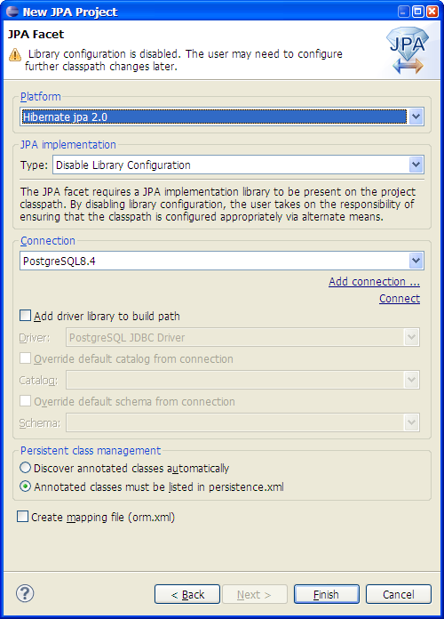
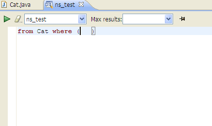
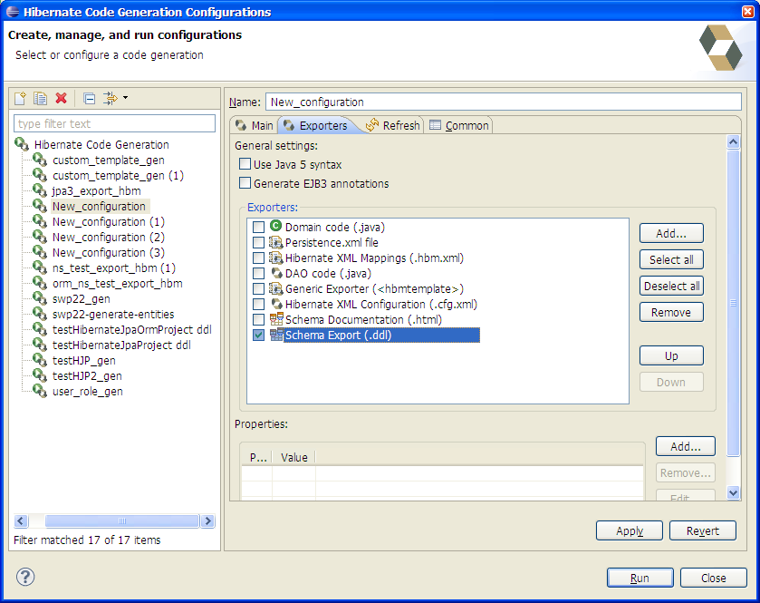

Dali Integration
|
| Support Dali 2.3 |
Hibernate tools 3.4.0 support Dali 2.3 version and don't support previous ones because of the API changes.
Related jira
|
|
| Support Jpa 2.0 in jpa projects |
Jpa projects with Hibernate platform support now hibernate jpa 2.0 implementation.

Related jira
|
HQL Editor
|
| Brackets in HQL Editor |
HQL Editor now highlights matching brackets.

Related jira
|
Code Generation
|
| DDL script |
DDL script isn't executed after generation by default because it could clear the database data.

Related jiras:1, 2
|
|